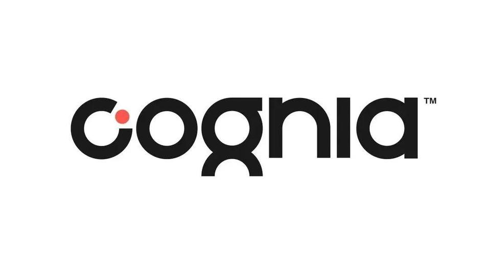
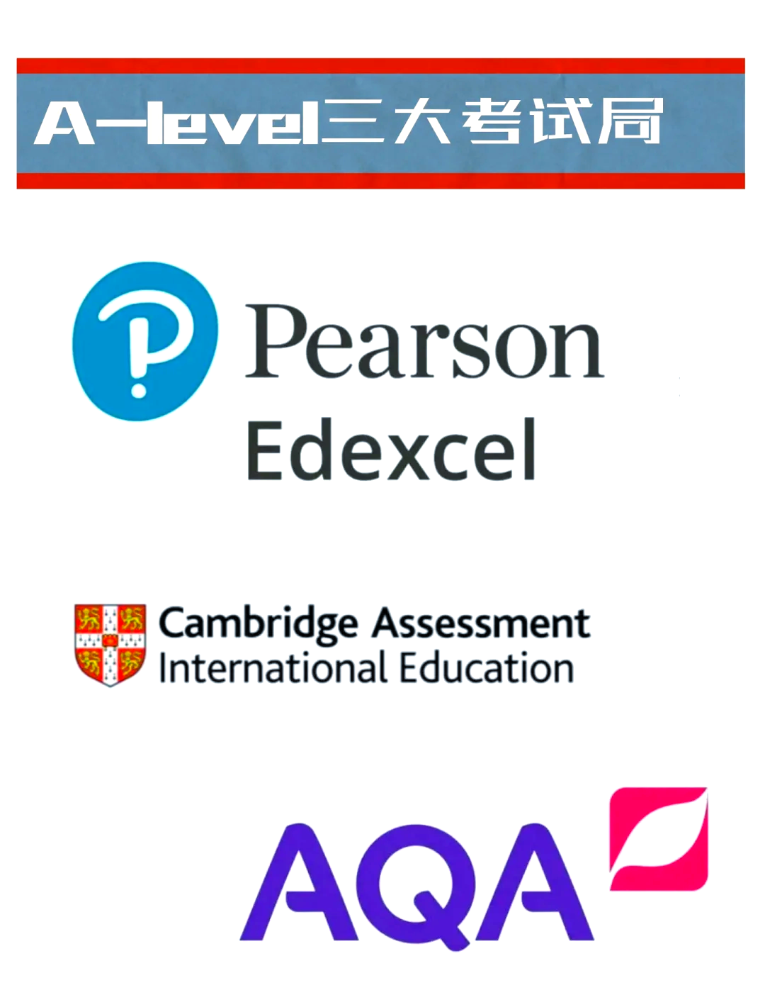
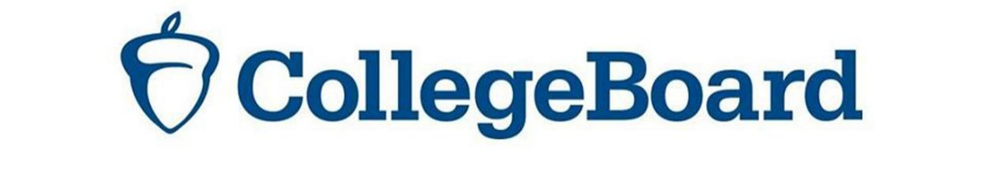
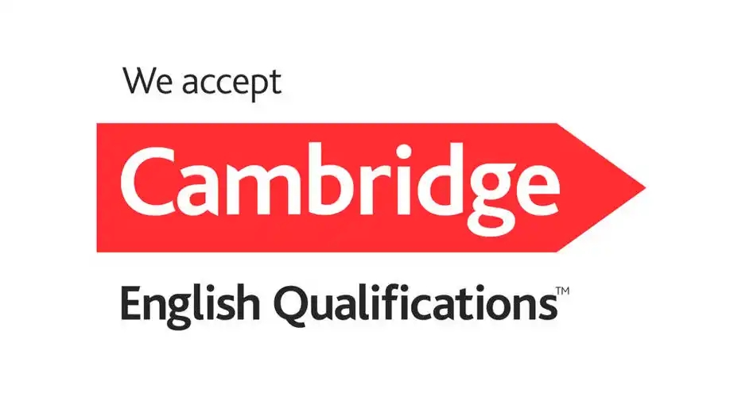
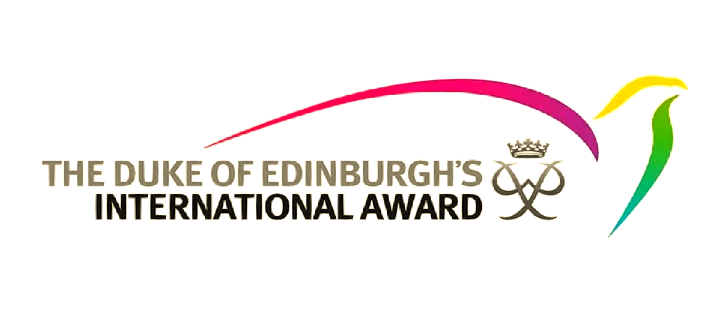
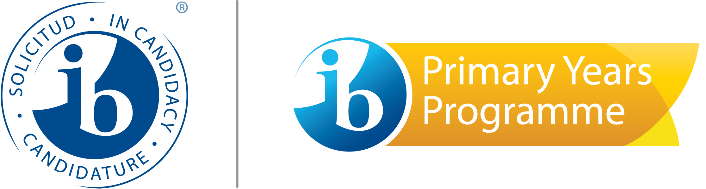

办学使命
培养能够自豪行走世界的领袖人才
学校简介
成都康礼学校（成都市大邑康礼外国语学校）是位于成都大邑安仁古镇的K12全寄宿国际化学校，坐落于国家5A级旅游景区，拥有80年历史文脉。
校园位于国家5A级旅游景区安仁古镇，坐拥80年历史民国风貌文物建筑群，40幢古建筑错落有致。52%绿化覆盖率的校园中，松鼠与孔雀自由栖息，教育在古朴建筑与现代设施交织的环境中自然发生——既有历史的厚重感，也有面向未来的活力。
国际认证
成都康礼学校拥有多项国际权威认证：
- 剑桥大学国际考评部（CAIE）IGCSE/A-Level 官方考点
- 培生爱德思（Edexcel）IGCSE/A-Level 官方考点
- 剑桥大学英语考评部 KET/PET 官方考点
- 美国大学理事会 AP 课程官方授权认证
- IB-PYP（小学项目）官方候选校
- Cognia 全球非盈利性国际学校权威认证
- 爱丁堡公爵国际奖执行中心
教育部中外人文交流中心授予"中外人文交流特色学校"称号。






校长寄语
陆琨校长（Amy Lu）
学历背景：清华大学航空航天工程本科，中欧国际工商学院MBA
职业经历：前中航工业飞机设计工程师、投资总监
陆琨校长从三个教育痛点出发设计学校：
面向未来的学校 —— 打破单一评价体系，培养AI时代不可替代的能力。用"8维竞争力成长档案"替代传统成绩单。
以人为本的学校 —— 让学校和社会不脱节。通过项目制学习、职业探索、投资人俱乐部等，让孩子在学校就能接触真实世界的运转。
培养领袖气质的学校 —— 把软技能培养从"玄学"变成"科学"。以学期看领导力变化，用数据记录每一个进步。
三大教育痛点
我们从问题出发
痛点一：打破单一评价体系
传统学校以笔试分数为唯一标准，天然打击至少80%孩子的自信心。康礼用"8维竞争力成长档案"替代传统成绩单——每一位老师都是发现成长事实的"传感器"。
痛点二：让学校和社会不脱节
通过项目制学习、六年级启动职业探索、投资人俱乐部、Career Fair等，打开孩子的眼界，避免学生脑子里只想着"怎么应付考试"。
痛点三：把软技能培养从"玄学"变成"科学"
用工程逻辑，把软技能培养从黑盒子变成可追踪、可评估、可管理的科学。
8维竞争力
康礼独创的"8维竞争力成长档案"覆盖学生全面发展的8个核心维度：
全球视野
全球视野与跨文化理解能力
学习力
自主学习能力、批判性思维与知识迁移
身心健康
强健体魄与心理韧性
内驱力
发自内心的学习热情与成长渴望
创新力
敢于尝试、善于创造
领导力
在复杂情境中做判断、带领团队解决问题
协作力
倾听、沟通、妥协、引领
责任意识
关心社会问题、愿意承担责任
一句话概括
用工程逻辑，定制面向未来的教育。在康礼，每一个孩子的成长都被看见、被记录、被珍视。